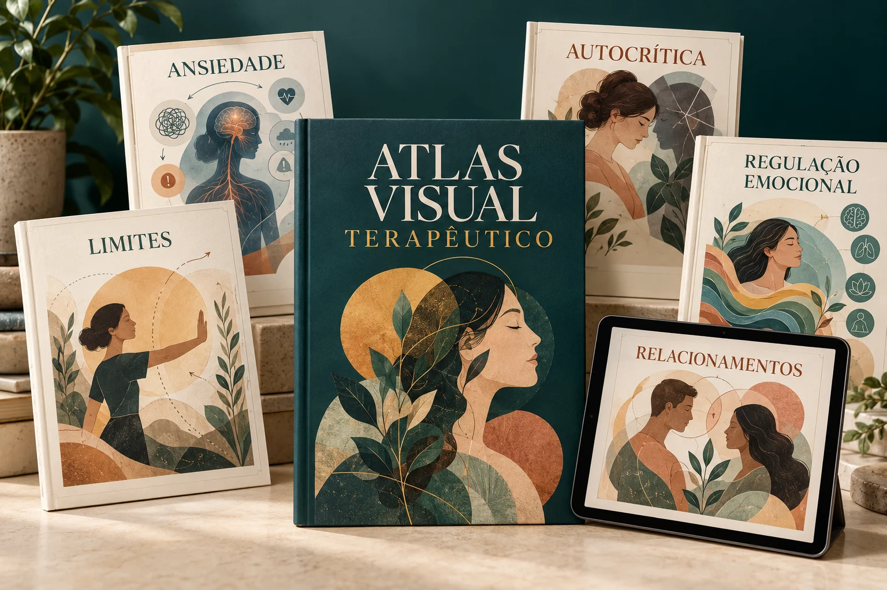
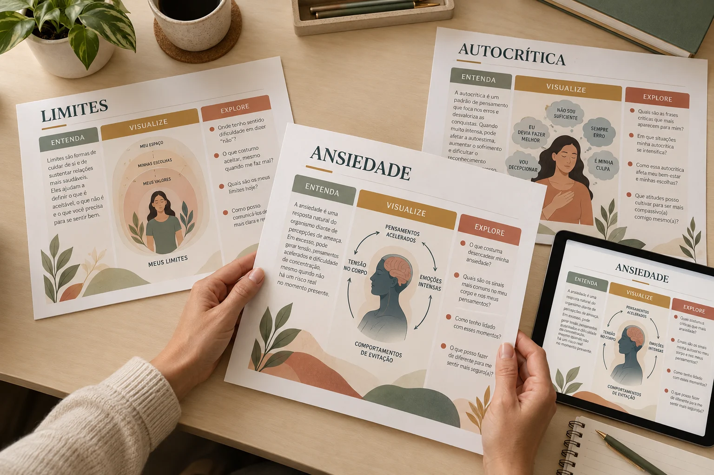
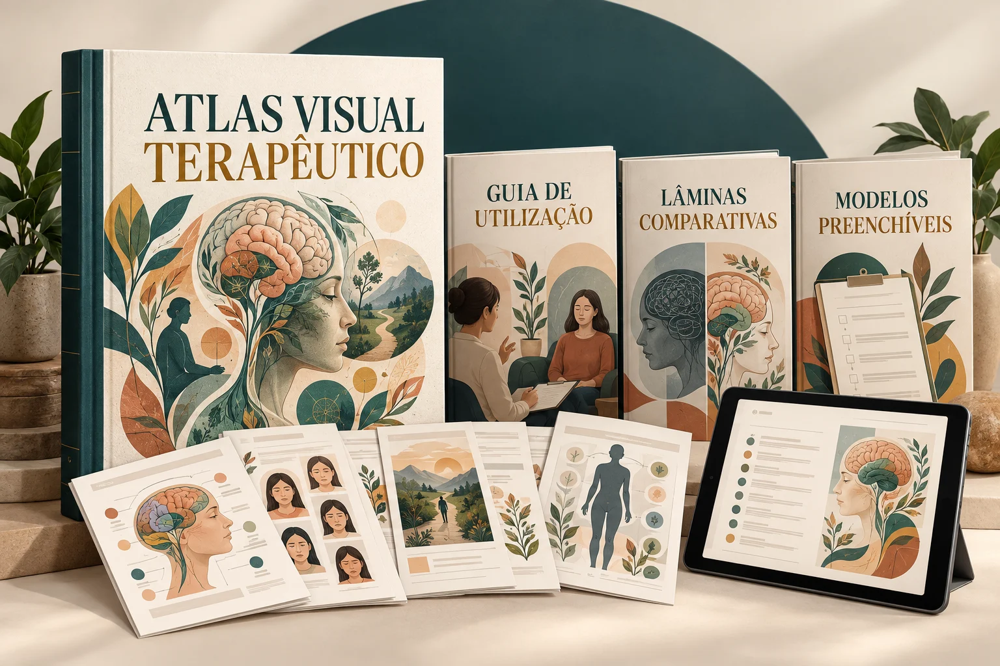

O tema surge de repente
Ansiedade, autocrítica, limites ou dependência emocional aparecem na conversa — e você precisa organizar a explicação na hora.
PARA PSICÓLOGAS QUE ATENDEM ADULTOS
Uma biblioteca visual com 60 temas para consultar, apresentar e explorar com pacientes adultos.

Oferta inicial proposta · Garantia proposta de 7 dias
ISSO ACONTECE NO SEU ATENDIMENTO?
Ansiedade, autocrítica, limites ou dependência emocional aparecem na conversa — e você precisa organizar a explicação na hora.
Você faz setas, ciclos e esquemas durante a sessão, mas aquele material improvisado nem sempre fica legível ou útil depois.
Uma explicação está em um livro, outra em uma anotação e outra em um arquivo salvo que demora para aparecer quando você precisa.
O Atlas foi pensado para reduzir essa distância entre saber o conceito e conseguir apresentá-lo de forma visual, simples e explorável.

O DIFERENCIAL ESTÁ NA SEQUÊNCIA
Em vez de amontoar conceito, diagrama e perguntas na mesma página, cada assunto é organizado em três movimentos:
Uma explicação acessível, sinais frequentes e um exemplo cotidiano para criar uma base comum.
Um ciclo, comparação, cena ou sequência escolhido de acordo com o funcionamento daquele tema.
Perguntas abertas para aproximar o conteúdo da experiência singular da pessoa atendida.
DO PREPARO À CONVERSA
Não é um roteiro rígido para conduzir a sessão. É um apoio visual para consultar e adaptar ao contexto clínico.
Localize o assunto pelo índice por tema ou pela situação que apareceu no atendimento.
Mostre a página em tela ou impressa e percorra os elementos no ritmo da conversa.
Escolha perguntas abertas para relacionar o conteúdo à experiência da pessoa.
O material tem finalidade educativa e de apoio. Não realiza diagnóstico e não substitui avaliação, formulação de caso ou julgamento profissional.
QUERO USAR ESSE APOIO NAS SESSÕESNA PRÁTICA
Consulte por assunto ou situação sem depender de uma sequência fixa de leitura.
Páginas pensadas para adultos, com linguagem acessível e aparência profissional.
Ciclo, cena, comparação ou sequência variam conforme o conteúdo — não pelo uso de um molde único.
O guia fica com o profissional; as páginas mostradas ao paciente permanecem diretas e legíveis.
CONTEÚDO PLANEJADO DA PRIMEIRA VERSÃO
Abra cada módulo para consultar os dez assuntos previstos.
Importante: este é o escopo planejado. O acervo completo ainda será produzido e revisado antes do lançamento.
QUERO OS 60 TEMAS DO ATLASFOI PENSADO PARA VOCÊ QUE...
VEJA TUDO QUE VOCÊ VAI RECEBER

OFERTA INICIAL DE TRABALHO
60 temas para consultar, apresentar e explorar durante atendimentos com adultos.
Esta é uma prévia. Checkout, suporte, licença, prazo de acesso e política de atualizações ainda serão definidos.
GARANTIA PROPOSTA
A primeira versão está planejada com garantia de 7 dias. Os termos finais serão apresentados junto às demais condições comerciais antes do lançamento.
PERGUNTAS FREQUENTES
Ainda não. Esta página apresenta o escopo planejado e protótipos visuais para validação. O conteúdo completo será produzido e revisado antes do lançamento.
Não. São 60 temas. Cada tema possui três páginas complementares — Entenda, Visualize e Explore — totalizando 180 páginas de conteúdo principal.
A oferta foi pensada principalmente para psicólogas que atendem adultos. Regras de uso por outros públicos e termos de licença ainda serão definidos.
Não. O material é educativo e de apoio ao atendimento. Ele não substitui avaliação profissional, diagnóstico, formulação de caso ou planejamento terapêutico.
O formato planejado é PDF A4 para impressão e uma versão adequada à apresentação em tela. Plataforma, prazo de acesso e suporte ainda estão em definição.
Ainda não afirmamos revisão especializada porque essa etapa não foi concluída. A versão final deverá informar com precisão as referências e o processo de revisão realizado.
A proposta inicial é oferecer garantia de 7 dias. As regras finais serão publicadas antes de o checkout ser ativado.
ATLAS VISUAL TERAPÊUTICO
Consulte. Apresente. Explore. Sem transformar o atendimento em uma aula e sem começar cada explicação do zero.
VER A OFERTA COMPLETA